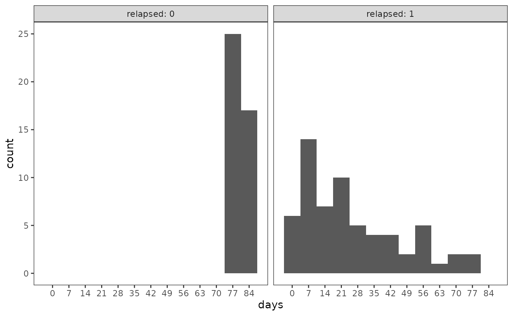
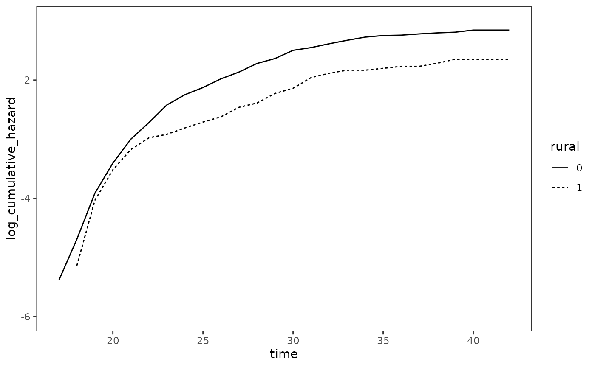
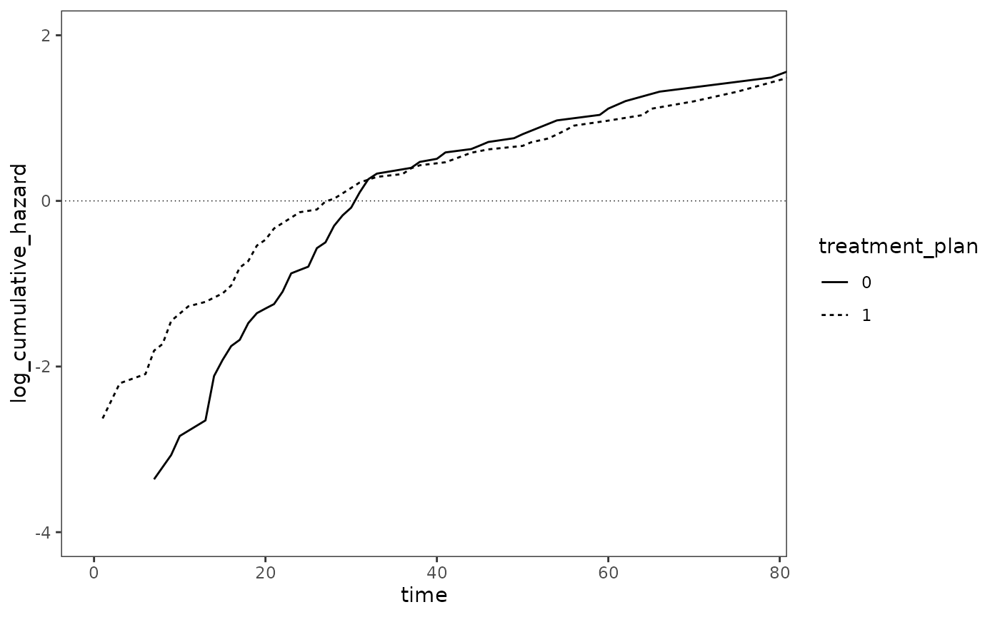
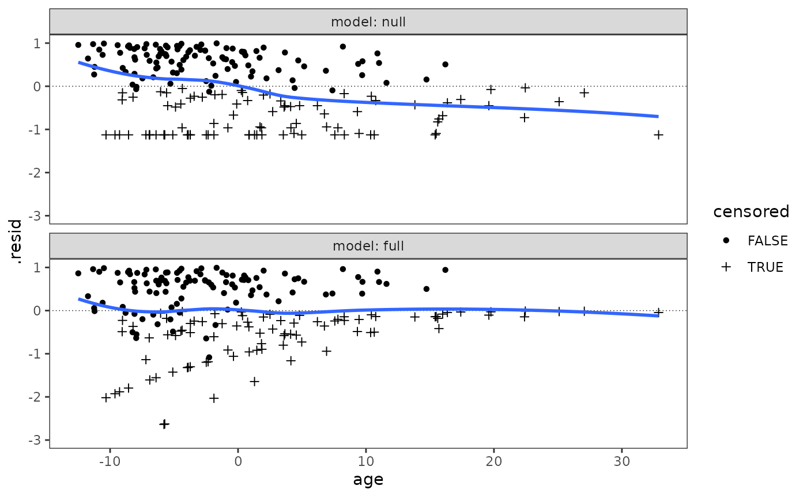
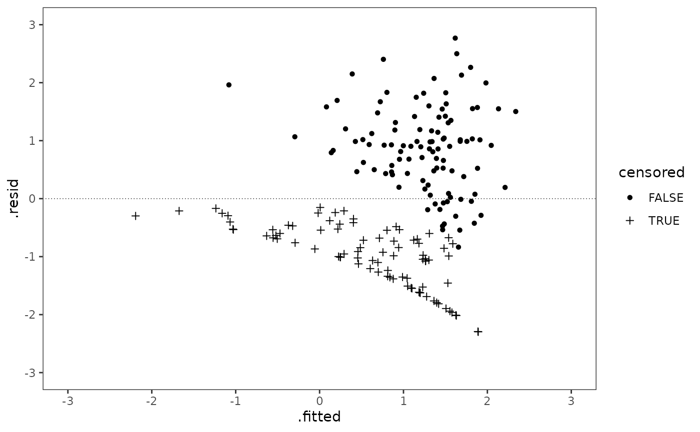
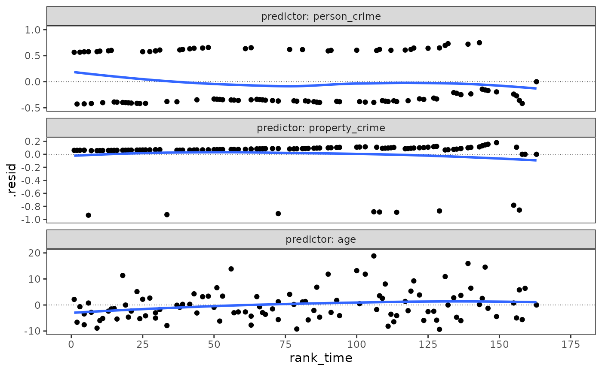
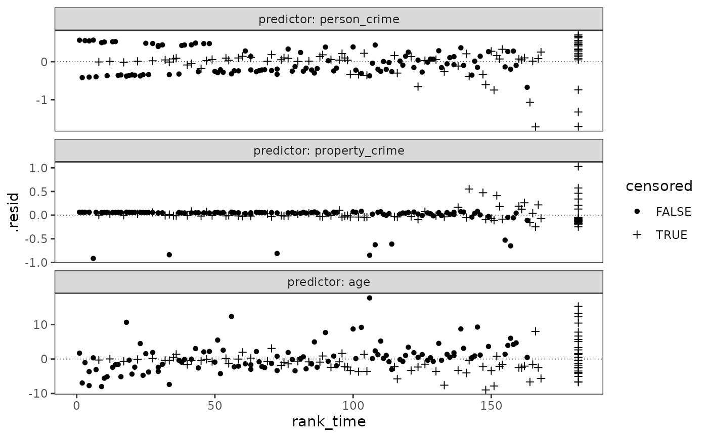
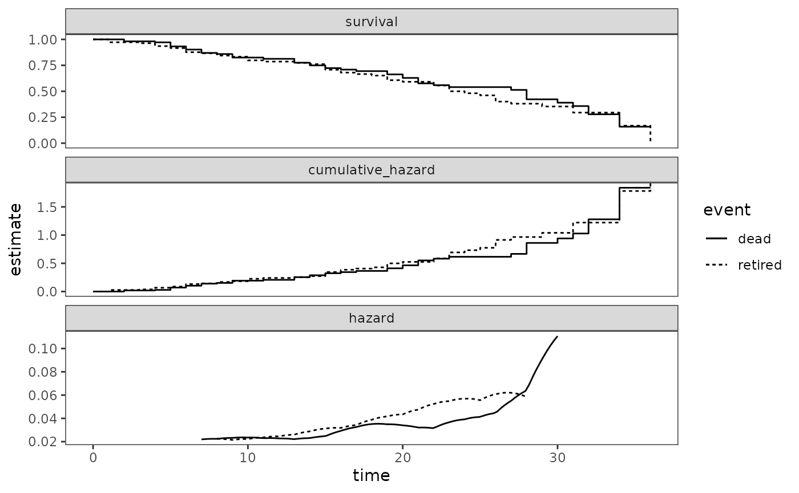

Chapter 15: Extending the Cox regression model
Source:vignettes/articles/chapter-15.Rmd
chapter-15.RmdThis chapter is under construction.
library(alda)
library(dplyr)
#>
#> Attaching package: 'dplyr'
#> The following objects are masked from 'package:stats':
#>
#> filter, lag
#> The following objects are masked from 'package:base':
#>
#> intersect, setdiff, setequal, union
library(tidyr)
library(purrr)
library(slider)
library(vctrs)
#>
#> Attaching package: 'vctrs'
#> The following object is masked from 'package:dplyr':
#>
#> data_frame
library(ggplot2)
library(patchwork)
library(survival)
library(muhaz)
library(broom)15.1 Time-Varying Predictors
Table 15.1, page 548:
# TODO: Clean up code and make table
model_A <- coxph(
Surv(used_cocaine_age, 1 - censor) ~
birthyr + early_marijuana_use + early_drug_use,
data = first_cocaine
)
# Model B ----
first_cocaine_pp <- first_cocaine |>
group_by(id) |>
reframe(
# {survival} uses the counting process method for time-varying predictors,
# so we need to construct intervals for the ages at which different events
# occurred. These intervals are left-censored, so we start with the end
# time; we also only require unique intervals, so duplicate ages should be
# removed.
age_end = sort(unique(c(used_cocaine_age, used_marijuana_age, used_drugs_age))),
age_start = lag(age_end, default = 0),
# Time-varying predictors should be lagged so that they describe an individual's
# status in the immediately prior year.
used_cocaine = if_else(
age_end == used_cocaine_age & censor == 0, true = 1, false = 0, missing = 0
),
used_marijuana = if_else(
age_end > used_marijuana_age, true = 1, false = 0, missing = 0
),
used_drugs = if_else(
age_end > used_drugs_age, true = 1, false = 0, missing = 0
),
# Keep time-invariant predictors from the person-level data
birthyr
) |>
relocate(age_start, .before = age_end)
model_B <- coxph(
Surv(age_start, age_end, used_cocaine) ~
birthyr + used_marijuana + used_drugs,
data = first_cocaine_pp,
ties = "efron"
)
## This method with tmerge() also works
tmerge(
first_cocaine, first_cocaine,
id = id,
used_cocaine = event(used_cocaine_age, 1 - censor),
used_marijuana = tdc(used_marijuana_age),
used_drugs = tdc(used_drugs_age),
options = list(
tstartname = "age_start",
tstopname = "age_end"
)
) |> as_tibble() |> arrange(id)
#> Warning: Unknown or uninitialised column: `tstop`.
#> Warning: Unknown or uninitialised column: `tstart`.
#> Warning in tmerge(first_cocaine, first_cocaine, id = id, used_cocaine =
#> event(used_cocaine_age, : replacement of variable 'used_marijuana'
#> Warning in tmerge(first_cocaine, first_cocaine, id = id, used_cocaine =
#> event(used_cocaine_age, : replacement of variable 'used_drugs'
#> # A tibble: 3,086 × 18
#> id used_cocaine_age censor birthyr early_marijuana_use early_drug_use
#> <fct> <dbl> <dbl> <dbl> <dbl> <dbl>
#> 1 5 41 1 0 0 0
#> 2 5 41 1 0 0 0
#> 3 5 41 1 0 0 0
#> 4 8 32 1 10 0 0
#> 5 9 36 1 5 0 0
#> 6 9 36 1 5 0 0
#> 7 11 41 1 0 0 0
#> 8 12 32 0 4 0 0
#> 9 12 32 0 4 0 0
#> 10 13 39 1 3 0 0
#> # ℹ 3,076 more rows
#> # ℹ 12 more variables: used_marijuana <int>, used_marijuana_age <dbl>,
#> # sold_marijuana <dbl>, sold_marijuana_age <dbl>, used_drugs <int>,
#> # used_drugs_age <dbl>, sold_drugs <dbl>, sold_drugs_age <dbl>, rural <dbl>,
#> # age_start <dbl>, age_end <dbl>, used_cocaine <dbl>
coxph(
Surv(age_start, age_end, used_cocaine) ~
birthyr + used_marijuana + used_drugs,
data = tmerge(
first_cocaine, first_cocaine,
id = id,
used_cocaine = event(used_cocaine_age, 1 - censor),
used_marijuana = tdc(used_marijuana_age),
used_drugs = tdc(used_drugs_age),
options = list(
tstartname = "age_start",
tstopname = "age_end"
)
),
ties = "efron"
) |>
summary()
#> Warning: Unknown or uninitialised column: `tstop`.
#> Warning: Unknown or uninitialised column: `tstart`.
#> Warning in tmerge(first_cocaine, first_cocaine, id = id, used_cocaine =
#> event(used_cocaine_age, : replacement of variable 'used_marijuana'
#> Warning in tmerge(first_cocaine, first_cocaine, id = id, used_cocaine =
#> event(used_cocaine_age, : replacement of variable 'used_drugs'
#> Warning: Unknown or uninitialised column: `tstop`.
#> Warning: Unknown or uninitialised column: `tstart`.
#> Warning in tmerge(first_cocaine, first_cocaine, id = id, used_cocaine =
#> event(used_cocaine_age, : replacement of variable 'used_marijuana'
#> Warning in tmerge(first_cocaine, first_cocaine, id = id, used_cocaine =
#> event(used_cocaine_age, : replacement of variable 'used_drugs'
#> Call:
#> coxph(formula = Surv(age_start, age_end, used_cocaine) ~ birthyr +
#> used_marijuana + used_drugs, data = tmerge(first_cocaine,
#> first_cocaine, id = id, used_cocaine = event(used_cocaine_age,
#> 1 - censor), used_marijuana = tdc(used_marijuana_age),
#> used_drugs = tdc(used_drugs_age), options = list(tstartname = "age_start",
#> tstopname = "age_end")), ties = "efron")
#>
#> n= 3086, number of events= 382
#>
#> coef exp(coef) se(coef) z Pr(>|z|)
#> birthyr 0.10741 1.11340 0.02145 5.008 5.5e-07 ***
#> used_marijuana 2.55176 12.82972 0.28095 9.082 < 2e-16 ***
#> used_drugs 1.85387 6.38446 0.12921 14.347 < 2e-16 ***
#> ---
#> Signif. codes: 0 '***' 0.001 '**' 0.01 '*' 0.05 '.' 0.1 ' ' 1
#>
#> exp(coef) exp(-coef) lower .95 upper .95
#> birthyr 1.113 0.89815 1.068 1.161
#> used_marijuana 12.830 0.07794 7.397 22.252
#> used_drugs 6.384 0.15663 4.956 8.225
#>
#> Concordance= 0.876 (se = 0.008 )
#> Likelihood ratio test= 856 on 3 df, p=<2e-16
#> Wald test = 451.1 on 3 df, p=<2e-16
#> Score (logrank) test = 1039 on 3 df, p=<2e-16
# Model C and D ----
first_cocaine_pp_C <- first_cocaine |>
group_by(id) |>
reframe(
age_end = sort(
unique(
c(
used_cocaine_age,
used_marijuana_age,
used_drugs_age,
sold_marijuana_age,
sold_drugs_age
)
)
),
age_start = lag(age_end, default = 0),
# Time-varying predictors should be lagged so that they describe an individual's
# status in the immediately prior year.
used_cocaine = if_else(
age_end == used_cocaine_age & censor == 0, true = 1, false = 0, missing = 0
),
used_marijuana = if_else(
age_end > used_marijuana_age, true = 1, false = 0, missing = 0
),
used_drugs = if_else(
age_end > used_drugs_age, true = 1, false = 0, missing = 0
),
sold_marijuana = if_else(
age_end > sold_marijuana_age, true = 1, false = 0, missing = 0
),
sold_drugs = if_else(
age_end > sold_drugs_age, true = 1, false = 0, missing = 0
),
# Keep time-invariant predictors from the person-level data
birthyr,
early_marijuana_use,
early_drug_use,
rural
) |>
relocate(age_start, .before = age_end)
first_cocaine_model_C <- coxph(
Surv(age_start, age_end, used_cocaine) ~
birthyr + used_marijuana + used_drugs + sold_marijuana + sold_drugs,
data = first_cocaine_pp_C,
ties = "efron"
)
model_D <- update(first_cocaine_model_C, . ~ . + early_marijuana_use + early_drug_use)15.1.3 Imputation Strategies for Time-Varying Predictors
In Section 15.1.3 Singer and Willet (2003) discuss imputation strategies for time-varying predictors using a subset of unpublished data from Hall, Havassy, and Wasserman (1990), who measured the relation between the number of days until relapse to cocaine use and several predictors that might be associated with relapse in a sample of 104 newly abstinent cocaine users who recently completed an abstinence-oriented treatment program. Former cocaine users were followed for up to 12 weeks post-treatment or until they used cocaine for 7 consecutive days. Self-reported abstinence was confirmed at each interview by the absence of cocaine in urine specimens.
For this example we use the cocaine_relapse_2 data set,
a person-period data frame with 1248 rows and 7 columns:
-
id: Participant ID. -
days: Number of days until relapse to cocaine use or censoring. Relapse was defined as 4 or more days of cocaine use during the week preceding an interview. Study dropouts and lost participants were coded as relapsing to cocaine use, with the number of days until relapse coded as occurring the week after the last follow-up interview attended. -
censor: Censoring status (0 = relapsed, 1 = censored). -
needle: Binary indicator for whether cocaine was ever used intravenously. -
base_mood: Total score on the positive mood subscales (Activity and Happiness) of the Mood Questionnaire (Ryman, Biersner, & LaRocco, 1974), taken at an intake interview during the last week of treatment. Each item used a five point Likert score (ranging from 0 = not at all, to 4 = extremely). -
followup: Week of follow-up interview. -mood: Total score on the positive mood subscales (Activity and Happiness) of the Mood Questionnaire (Ryman, Biersner, & LaRocco, 1974), taken during follow-up interviews each week post-treatment. Each item used a five point Likert score (ranging from 0 = not at all, to 4 = extremely).
glimpse(cocaine_relapse_2)
#> Rows: 1,248
#> Columns: 7
#> $ id <fct> 550, 550, 550, 550, 550, 550, 550, 550, 550, 550, 550, 550, …
#> $ censor <dbl> 1, 1, 1, 1, 1, 1, 1, 1, 1, 1, 1, 1, 1, 1, 1, 1, 1, 1, 1, 1, …
#> $ days <dbl> 83, 83, 83, 83, 83, 83, 83, 83, 83, 83, 83, 83, 83, 83, 83, …
#> $ needle <dbl> 1, 1, 1, 1, 1, 1, 1, 1, 1, 1, 1, 1, 0, 0, 0, 0, 0, 0, 0, 0, …
#> $ base_mood <dbl> 29, 29, 29, 29, 29, 29, 29, 29, 29, 29, 29, 29, 25, 25, 25, …
#> $ followup <int> 1, 2, 3, 4, 5, 6, 7, 8, 9, 10, 11, 12, 1, 2, 3, 4, 5, 6, 7, …
#> $ mood <dbl> 23, 27, 28, 31, 29, 32, 33, 28, 36, 33, 33, 24, 31, 19, 29, …Because time to relapse was measured in days but follow-up interviews
were conducted only once a week, the cocaine relapse data in its current
form fails to meet the data requirement for time-varying predictors: For
each unique event time in days we do not know the
time-varying mood scores—for everyone still at risk at—at
each of those moments. Thus, in order to meet this data requirement we
must generate predictor histories that provide near-daily
mood scores for each participant.
In the proceeding steps we will develop three Cox regression models
fitted to the cocaine relapse data to illustrate and compare different
imputation strategies for time-varying predictors. Each includes the
number of days until relapse to cocaine use as the outcome
variable; the time-invariant predictor needle; and a
different time-varying variable representing the predictor for total
score on the positive mood subscales of the Mood Questionnaire (Ryman,
Biersner, & LaRocco, 1974), for which we will explore the following
popular imputation strategies suggested by Singer and Willet (2003):
- Carry forward each mood score until the next one is available.
- Interpolate between adjacent mood scores.
- Compute a moving average based on the most recent and several past mood scores.
Exploratory Data Analysis
We begin by exploring the time-invariant variables in the
cocaine_relapse_2 data. Because it will be convenient for
one of the Cox regression models fitted later on, we will do so using a
person-level version of the cocaine_relapse_2 data.
cocaine_relapse_2_pl <- cocaine_relapse_2 |>
pivot_wider(
names_from = followup,
names_prefix = "mood_",
values_from = mood
)
glimpse(cocaine_relapse_2_pl)
#> Rows: 104
#> Columns: 17
#> $ id <fct> 550, 604, 608, 631, 513, 531, 533, 536, 599, 542, 564, 573, …
#> $ censor <dbl> 1, 1, 1, 1, 1, 1, 1, 1, 1, 1, 1, 1, 1, 1, 1, 1, 1, 1, 1, 1, …
#> $ days <dbl> 83, 83, 83, 83, 82, 82, 82, 82, 82, 81, 81, 81, 81, 81, 81, …
#> $ needle <dbl> 1, 0, 1, 1, 0, 0, 0, 0, 0, 0, 0, 0, 1, 0, 0, 0, 1, 1, 0, 1, …
#> $ base_mood <dbl> 29, 25, 37, 39, 33, 27, 10, 27, 28, 19, 35, 32, 32, 31, 31, …
#> $ mood_1 <dbl> 23, 31, 40, 42, 43, 14, 16, 22, 29, 31, 30, 27, 27, 41, 40, …
#> $ mood_2 <dbl> 27, 19, 37, 22, 25, 11, 26, 21, 28, 25, 33, 26, 27, NA, NA, …
#> $ mood_3 <dbl> 28, 29, 36, 38, 34, 2, 37, 24, 25, 28, 33, 24, 23, 38, 31, 4…
#> $ mood_4 <dbl> 31, 24, 36, 41, 42, 8, 17, 24, NA, 20, 33, 29, 22, 37, NA, N…
#> $ mood_5 <dbl> 29, 22, 32, 41, 46, 3, 30, NA, NA, 23, 26, 21, 26, 24, 28, N…
#> $ mood_6 <dbl> 32, 22, 35, 42, 42, 3, 15, 22, 16, 29, 35, 28, 28, 27, 28, 2…
#> $ mood_7 <dbl> 33, NA, 34, 42, 46, 5, 16, NA, 22, 27, 35, 22, 24, 27, 31, 2…
#> $ mood_8 <dbl> 28, 20, 35, 42, 46, 3, 15, 23, 23, NA, 33, 28, 17, 28, 22, 3…
#> $ mood_9 <dbl> 36, 31, 29, 46, 47, 2, 21, 19, 24, NA, 29, 25, 14, 31, 24, 3…
#> $ mood_10 <dbl> 33, 33, 36, NA, NA, 2, 14, 21, 16, 31, NA, NA, NA, 37, 33, N…
#> $ mood_11 <dbl> 33, 30, 30, 47, 28, 0, 20, 15, 18, 23, 26, 25, 17, 38, 29, 2…
#> $ mood_12 <dbl> 24, NA, 36, 43, 44, 0, 16, 18, 16, 21, NA, 25, 19, 34, 30, 2…A total of 62 newly abstinent cocaine users (59.6%) relapsed to cocaine use within 12 weeks of completing the abstinence-oriented treatment program.
cocaine_relapse_2_pl |>
group_by(relapsed = 1 - censor) |>
summarise(count = n()) |>
mutate(proportion = count / sum(count))
#> # A tibble: 2 × 3
#> relapsed count proportion
#> <dbl> <int> <dbl>
#> 1 0 42 0.404
#> 2 1 62 0.596Most of those users relapsed early-on during the follow-up period.
ggplot(cocaine_relapse_2_pl, aes(x = days)) +
geom_histogram(binwidth = 7) +
scale_x_continuous(breaks = c(0, 1:12 * 7)) +
facet_wrap(vars(relapsed = 1 - censor), labeller = label_both)
Across the sample there were 38 unique event times.
# We will use these event times later on during the imputation procedure for
# Model B. It is important they are sorted in ascending order for this
# procedure, so we do so here for convenience while creating the object.
event_times <- cocaine_relapse_2_pl |>
filter(1 - censor == 1) |>
pull(days) |>
unique() |>
sort()
censor_times <- cocaine_relapse_2_pl |>
filter(censor == 1) |>
pull(days) |>
unique()
event_times |>
discard(\(.x) .x %in% censor_times) |>
length()
#> [1] 38A total of 69 participants (66.3%) reported having previously used cocaine intravenously.
Model A: Time-Invariant Baseline
Model A uses the time-invariant predictor assessing the respondent’s mood score just before release from treatment.
model_A <- coxph(
Surv(days, 1 - censor) ~ needle + base_mood,
data = cocaine_relapse_2_pl,
ties = "efron"
)
summary(model_A)
#> Call:
#> coxph(formula = Surv(days, 1 - censor) ~ needle + base_mood,
#> data = cocaine_relapse_2_pl, ties = "efron")
#>
#> n= 104, number of events= 62
#>
#> coef exp(coef) se(coef) z Pr(>|z|)
#> needle 1.020734 2.775232 0.314068 3.250 0.00115 **
#> base_mood -0.003748 0.996259 0.014709 -0.255 0.79886
#> ---
#> Signif. codes: 0 '***' 0.001 '**' 0.01 '*' 0.05 '.' 0.1 ' ' 1
#>
#> exp(coef) exp(-coef) lower .95 upper .95
#> needle 2.7752 0.3603 1.4996 5.136
#> base_mood 0.9963 1.0038 0.9679 1.025
#>
#> Concordance= 0.63 (se = 0.036 )
#> Likelihood ratio test= 12.51 on 2 df, p=0.002
#> Wald test = 10.6 on 2 df, p=0.005
#> Score (logrank) test = 11.51 on 2 df, p=0.003Model B:
For Model B we return to the person-period version
of the cocaine_relapse_2 data and explore the first
imputation strategy suggested by Singer and Willet (2003): Carrying
forward each mood score until the next one is available. For this
procedure we will also lag the mood score predictor by one
week—associating, for example, the first followup with baseline mood
scores, the second followup with the first followup’s mood scores, and
so forth.
cocaine_relapse_2_prevweek <- cocaine_relapse_2 |>
group_by(id) |>
mutate(
mood_previous_week = lag(mood, default = unique(base_mood)),
mood_previous_week_fill = vec_fill_missing(
mood_previous_week, direction = "down"
)
)
cocaine_relapse_2_prevweek
#> # A tibble: 1,248 × 9
#> # Groups: id [104]
#> id censor days needle base_mood followup mood mood_previous_week
#> <fct> <dbl> <dbl> <dbl> <dbl> <int> <dbl> <dbl>
#> 1 550 1 83 1 29 1 23 29
#> 2 550 1 83 1 29 2 27 23
#> 3 550 1 83 1 29 3 28 27
#> 4 550 1 83 1 29 4 31 28
#> 5 550 1 83 1 29 5 29 31
#> 6 550 1 83 1 29 6 32 29
#> 7 550 1 83 1 29 7 33 32
#> 8 550 1 83 1 29 8 28 33
#> 9 550 1 83 1 29 9 36 28
#> 10 550 1 83 1 29 10 33 36
#> # ℹ 1,238 more rows
#> # ℹ 1 more variable: mood_previous_week_fill <dbl>Next, to prepare the cocaine_relapse_2_prevweek data for
modelling, we want to transform it into a data set that has the number
of days until relapse in a counting process or (start,
stop) format, which is a person-period format where:
- Each row of the transformed data set represents an “at-risk” time
interval (
day_start,day_end], which is open on the left and closed on the right. - The
eventvariable for each row is 1 if the time interval ends with an event and 0 otherwise. - Variable values for each row are the values that apply over that time interval.
The start and end points for each time interval are determined by the
vector of unique event_times, which we defined earlier. For
censored data, the end point of the final time interval is determined by
the time of censorship—which is not included in the vector of unique
event times—so it needs to be handled separately.
Transforming the cocaine_relapse_2_prevweek data into a
counting process format is a two-step process. First we create the
counting process structure, with columns for participant ID, start time,
stop time, and event status for each record. We also add a
week variable indicating the week that each record occurred
in, which will be important for the second step in the process. Note
that this step could done using either the person-period or person-level
versions of the cocaine_relapse_2 data however, for
readability we use the person-level data below. The same result can be
obtained using the person-period data by wrapping the calls to
days and censor with
unique().
cocaine_relapse_2_prevweek_cp <- cocaine_relapse_2_pl |>
group_by(id) |>
reframe(
# For censored data the final day should be a participant's days value, so
# we need to concatenate their days to the vector of event times. The call
# to unique() around the vector removes the duplicate for uncensored data in
# the final time interval.
day_end = unique(c(event_times[event_times <= days], days)),
day_start = lag(day_end, default = 0),
event = if_else(day_end == days & censor == 0, true = 1, false = 0),
week = floor(day_end / 7) + 1
) |>
relocate(day_start, .after = id)
cocaine_relapse_2_prevweek_cp
#> # A tibble: 2,805 × 5
#> id day_start day_end event week
#> <fct> <dbl> <dbl> <dbl> <dbl>
#> 1 501 0 1 0 1
#> 2 501 1 2 0 1
#> 3 501 2 3 0 1
#> 4 501 3 4 0 1
#> 5 501 4 6 0 1
#> 6 501 6 7 0 2
#> 7 501 7 8 0 2
#> 8 501 8 9 0 2
#> 9 501 9 10 0 2
#> 10 501 10 11 0 2
#> # ℹ 2,795 more rowsSecond, we join the cocaine_relapse_2_prevweek data to
the counting process structure by id and week,
giving us the counting process formatted data with each time-varying
predictor’s values occurring at the appropriate time interval for each
participant. Finally, to match the text, we will rename our mood score
variable to week_mood.
cocaine_relapse_2_prevweek_cp <- cocaine_relapse_2_prevweek_cp |>
left_join(
cocaine_relapse_2_prevweek,
by = join_by(id == id, week == followup)
) |>
rename(week_mood = mood_previous_week_fill)
cocaine_relapse_2_prevweek_cp
#> # A tibble: 2,805 × 12
#> id day_start day_end event week censor days needle base_mood mood
#> <fct> <dbl> <dbl> <dbl> <dbl> <dbl> <dbl> <dbl> <dbl> <dbl>
#> 1 501 0 1 0 1 0 12 1 29 34
#> 2 501 1 2 0 1 0 12 1 29 34
#> 3 501 2 3 0 1 0 12 1 29 34
#> 4 501 3 4 0 1 0 12 1 29 34
#> 5 501 4 6 0 1 0 12 1 29 34
#> 6 501 6 7 0 2 0 12 1 29 19
#> 7 501 7 8 0 2 0 12 1 29 19
#> 8 501 8 9 0 2 0 12 1 29 19
#> 9 501 9 10 0 2 0 12 1 29 19
#> 10 501 10 11 0 2 0 12 1 29 19
#> # ℹ 2,795 more rows
#> # ℹ 2 more variables: mood_previous_week <dbl>, week_mood <dbl>The survival package also comes with two utility
functions, survSplit() and tmerge(), that can
be used to transform data into a counting process format. For further
discussion, see
vignette("timedep", package="survival").
Now we can fit Model B.
model_B <- coxph(
Surv(day_start, day_end, event) ~ needle + week_mood,
data = cocaine_relapse_2_prevweek_cp,
ties = "efron"
)
summary(model_B)
#> Call:
#> coxph(formula = Surv(day_start, day_end, event) ~ needle + week_mood,
#> data = cocaine_relapse_2_prevweek_cp, ties = "efron")
#>
#> n= 2805, number of events= 62
#>
#> coef exp(coef) se(coef) z Pr(>|z|)
#> needle 1.07959 2.94348 0.31574 3.419 0.000628 ***
#> week_mood -0.03490 0.96570 0.01387 -2.517 0.011832 *
#> ---
#> Signif. codes: 0 '***' 0.001 '**' 0.01 '*' 0.05 '.' 0.1 ' ' 1
#>
#> exp(coef) exp(-coef) lower .95 upper .95
#> needle 2.9435 0.3397 1.5853 5.4654
#> week_mood 0.9657 1.0355 0.9398 0.9923
#>
#> Concordance= 0.662 (se = 0.037 )
#> Likelihood ratio test= 18.61 on 2 df, p=9e-05
#> Wald test = 16.62 on 2 df, p=2e-04
#> Score (logrank) test = 17.49 on 2 df, p=2e-04Model C:
For Model C we will also start with the lagged
weekly mood scores, however, we will use a different imputation
strategy: Interpolating between adjacent mood scores. Although Singer
and Willet (2003) suggest “resisting the temptation to design
sophisticated imputation algorithms,” their approach to interpolating
between adjacent mood scores was somewhat complex. Consequently, we need
to create our own function to suit the purpose, rather than using
existing functions like zoo::na.approx() or
imputeTS::na_ma().
Singer and Willet (2003) do not describe their approach in the text, but their algorithm appears to be based on the following rules:
- Trailing
NAs should be imputed consecutively using the most recent non-missing mood score. - Internal
NAs should be imputed using the mean between adjacent non-missing mood scores. For consecutive internalNAs, following the first imputed mood score in the sequence, everyNAthereafter should be imputed using the mean of the previousNAvalue’s imputed mood score and the next non-missing mood score. - Imputed mood scores should be rounded to the nearest integer.
na_adjacent <- function(x) {
# The while loop is used here to allow us to carry forward imputed mood scores
# for consecutive internal NAs.
x_avg <- x
while (any(is.na(x_avg[2:length(x)]))) {
x_avg <- pslide_dbl(
list(
x_avg,
vec_fill_missing(x_avg, direction = "down"),
vec_fill_missing(x_avg, direction = "up")
),
\(.x, .x_fill_down, .x_fill_up) {
case_when(
# Rule 1:
all(is.na(.x[3:length(.x)])) ~ .x_fill_down[2],
# Rule 2:
!is.na(.x[1]) & is.na(.x[2]) ~ mean(c(.x_fill_up[1], .x_fill_up[2])),
TRUE ~ .x[2]
)
},
.before = 1,
.after = Inf,
.complete = TRUE
)
# Rule 3. We are not using round() here because it goes to the even digit when
# rounding off a 5, rather than always going upward.
x_avg <- if_else(x_avg %% 1 < .5, floor(x_avg), ceiling(x_avg))
x_avg[1] <- x[1]
}
x_avg
}Now we can impute the lagged weekly mood scores using the
na_adjacent() function.
cocaine_relapse_2_adjacent <- cocaine_relapse_2_prevweek |>
group_by(id) |>
mutate(
# It's important to include the final follow-up when imputing between
# adjacent mood scores, otherwise cases where the second last score is an
# internal NA will fill down instead of using the mean between adjacent mood
# scores. However, afterwards the final follow-up can be dropped.
mood_adjacent_lag = na_adjacent(c(mood_previous_week, last(mood)))[-13],
# We also want the non-lagged mood scores for later, which we impute using
# similar logic.
mood_adjacent = na_adjacent(c(first(mood_previous_week), mood))[-1]
)
# Here is a small preview of the difference between the imputation strategies
# for Models B and C:
cocaine_relapse_2_adjacent |>
filter(id == 544) |>
select(id, followup, mood_previous_week:mood_adjacent_lag)
#> # A tibble: 12 × 5
#> # Groups: id [1]
#> id followup mood_previous_week mood_previous_week_fill mood_adjacent_lag
#> <fct> <int> <dbl> <dbl> <dbl>
#> 1 544 1 40 40 40
#> 2 544 2 40 40 40
#> 3 544 3 38 38 38
#> 4 544 4 27 27 27
#> 5 544 5 NA 27 25
#> 6 544 6 22 22 22
#> 7 544 7 NA 22 21
#> 8 544 8 NA 22 21
#> 9 544 9 20 20 20
#> 10 544 10 NA 20 25
#> 11 544 11 30 30 30
#> 12 544 12 28 28 28Next, to prepare the cocaine_relapse_2_adjacent data for
modelling, we will again transform it into counting process format;
however, for Model C each “at-risk” time interval will be one day long.
Following Singer and Willet (2003), we will construct a
day_mood variable by linearly interpolating between
adjacent weekly values to yield daily values, and then assigning to each
given day the mood value we imputed for the immediate prior day.
cocaine_relapse_2_adjacent_cp <- cocaine_relapse_2_adjacent |>
group_by(id, followup) |>
reframe(
day_end = (followup - 1) * 7 + 1:7,
day_start = day_end - 1,
days = unique(days),
censor = unique(censor),
event = if_else(
day_end == days & censor == 0,
true = 1, false = 0
),
needle = unique(needle),
mood_day = approx(c(mood_adjacent_lag, mood_adjacent), n = 8)[[2]][1:7],
) |>
relocate(day_start, day_end, days, .after = id) |>
filter(day_end <= days)
cocaine_relapse_2_adjacent_cp
#> # A tibble: 4,948 × 9
#> id day_start day_end days followup censor event needle mood_day
#> <fct> <dbl> <dbl> <dbl> <int> <dbl> <dbl> <dbl> <dbl>
#> 1 501 0 1 12 1 0 0 1 29
#> 2 501 1 2 12 1 0 0 1 29.7
#> 3 501 2 3 12 1 0 0 1 30.4
#> 4 501 3 4 12 1 0 0 1 31.1
#> 5 501 4 5 12 1 0 0 1 31.9
#> 6 501 5 6 12 1 0 0 1 32.6
#> 7 501 6 7 12 1 0 0 1 33.3
#> 8 501 7 8 12 2 0 0 1 34
#> 9 501 8 9 12 2 0 0 1 31.9
#> 10 501 9 10 12 2 0 0 1 29.7
#> # ℹ 4,938 more rowsNow we can fit Model C.
model_C <- coxph(
Surv(day_start, day_end, event) ~ needle + mood_day,
data = cocaine_relapse_2_adjacent_cp,
ties = "efron"
)
summary(model_C)
#> Call:
#> coxph(formula = Surv(day_start, day_end, event) ~ needle + mood_day,
#> data = cocaine_relapse_2_adjacent_cp, ties = "efron")
#>
#> n= 4948, number of events= 62
#>
#> coef exp(coef) se(coef) z Pr(>|z|)
#> needle 1.12077 3.06720 0.31700 3.536 0.000407 ***
#> mood_day -0.05438 0.94707 0.01489 -3.651 0.000261 ***
#> ---
#> Signif. codes: 0 '***' 0.001 '**' 0.01 '*' 0.05 '.' 0.1 ' ' 1
#>
#> exp(coef) exp(-coef) lower .95 upper .95
#> needle 3.0672 0.326 1.6478 5.7091
#> mood_day 0.9471 1.056 0.9198 0.9751
#>
#> Concordance= 0.695 (se = 0.036 )
#> Likelihood ratio test= 25.52 on 2 df, p=3e-06
#> Wald test = 23.1 on 2 df, p=1e-05
#> Score (logrank) test = 24.04 on 2 df, p=6e-06Table 15.2, page 555:
# TODO15.2 Nonproportional Hazards Models via Stratification
Figure 15.2, page 559:
# FIXME: The upper limit of the data doesn't match the textbook.
survfit(Surv(used_cocaine_age, 1 - censor) ~ rural, data = first_cocaine) |>
tidy() |>
mutate(
strata = stringr::str_remove(strata, "rural="),
cumulative_hazard = -log(estimate),
log_cumulative_hazard = log(cumulative_hazard)
) |>
rename(rural = strata) |>
ggplot(aes(x = time, y = log_cumulative_hazard, linetype = rural)) +
geom_line() +
coord_cartesian(ylim = c(-6, -1))
Table 15.3, page 560:
# first_cocaine_model_C from earlier is the first model
first_cocaine_model_C
#> Call:
#> coxph(formula = Surv(age_start, age_end, used_cocaine) ~ birthyr +
#> used_marijuana + used_drugs + sold_marijuana + sold_drugs,
#> data = first_cocaine_pp_C, ties = "efron")
#>
#> coef exp(coef) se(coef) z p
#> birthyr 0.08493 1.08864 0.02183 3.890 1e-04
#> used_marijuana 2.45920 11.69542 0.28357 8.672 < 2e-16
#> used_drugs 1.25110 3.49419 0.15656 7.991 1.34e-15
#> sold_marijuana 0.68989 1.99349 0.12263 5.626 1.84e-08
#> sold_drugs 0.76037 2.13908 0.13066 5.819 5.91e-09
#>
#> Likelihood ratio test=944.5 on 5 df, p=< 2.2e-16
#> n= 3312, number of events= 382
first_cocaine_model_stratified <- update(
first_cocaine_model_C, . ~ . + strata(rural)
)
first_cocaine_model_nonrural <- update(
first_cocaine_model_C, subset = rural == 0
)
first_cocaine_model_rural <- update(
first_cocaine_model_C, subset = rural == 1
)
# TODO: Make table.15.3 Nonproportional Hazards Models via Interactions with Time
Table 15.4 page 566:
# TODO
psychiatric_discharge
#> # A tibble: 174 × 4
#> id days censor treatment_plan
#> <fct> <dbl> <dbl> <dbl>
#> 1 2 3 0 1
#> 2 8 46 0 0
#> 3 73 30 0 0
#> 4 76 45 0 0
#> 5 78 22 0 0
#> 6 79 50 0 0
#> 7 81 59 0 0
#> 8 83 44 0 0
#> 9 95 44 0 1
#> 10 117 22 0 0
#> # ℹ 164 more rowsFigure 15.3 page 567:
# FIXME: The upper limit of the data doesn't match the textbook.
survfit(Surv(days, 1 - censor) ~ treatment_plan, data = psychiatric_discharge) |>
tidy() |>
mutate(
strata = stringr::str_remove(strata, "treatment_plan="),
cumulative_hazard = -log(estimate),
log_cumulative_hazard = log(cumulative_hazard)
) |>
rename(treatment_plan = strata) |>
ggplot(aes(x = time, y = log_cumulative_hazard, linetype = treatment_plan)) +
geom_hline(yintercept = 0, linewidth = .25, linetype = 3) +
geom_line() +
coord_cartesian(xlim = c(0, 77), ylim = c(-4, 2))
# TODO: Bottom panel15.4 Regression Diagnostics
Figure 15.4 page 573:
rearrest <- rearrest |>
mutate(rank_time = rank(months, ties.method = "average"), .after = "months")
rearrest_null_model <- coxph(Surv(months, 1 - censor) ~ 1, data = rearrest)
rearrest_full_model <- update(
rearrest_null_model, . ~ . + person_crime + property_crime + age
)
rearrest_models <- list(
null = rearrest_null_model,
full = rearrest_full_model
)
rearrest_fits <- rearrest_models |>
map(
\(.x) {
map_df(
list(martingale = "martingale", deviance = "deviance"),
\(.y) augment(
.x, data = rearrest, type.predict = "lp", type.residuals = .y
),
.id = ".resid_type"
)
}
) |>
list_rbind(names_to = "model") |>
mutate(
model = factor(model, levels = c("null", "full")),
censored = as.logical(censor)
)
rearrest_fits |>
filter(.resid_type == "martingale") |>
ggplot(aes(x = age, y = .resid)) +
geom_hline(yintercept = 0, linewidth = .25, linetype = 3) +
geom_point(aes(shape = censored)) +
scale_shape_manual(values = c(16, 3)) +
geom_smooth(se = FALSE) +
facet_wrap(vars(model), ncol = 1, labeller = label_both) +
coord_cartesian(ylim = c(-3, 1))
#> `geom_smooth()` using method = 'loess' and formula = 'y ~ x'
Figure 15.5 page 577:
stem(resid(rearrest_full_model, type = "deviance"), scale = 2)
#>
#> The decimal point is 1 digit(s) to the left of the |
#>
#> -22 | 09
#> -20 | 21
#> -18 | 6491
#> -16 | 969321
#> -14 | 54216
#> -12 | 87654741
#> -10 | 208776542110
#> -8 | 99852176544
#> -6 | 876322098874400
#> -4 | 444443332877644210
#> -2 | 85009955411
#> -0 | 997597551
#> 0 | 268979
#> 2 | 0318
#> 4 | 133678802337
#> 6 | 2688919
#> 8 | 1136690012233889999
#> 10 | 122334724789
#> 12 | 0115
#> 14 | 0228055578
#> 16 | 03795
#> 18 | 2336
#> 20 | 0735
#> 22 | 6
#> 24 | 00
#> 26 | 7
rearrest_fits |>
filter(model == "full" & .resid_type == "deviance") |>
ggplot(aes(x = .fitted, y = .resid)) +
geom_hline(yintercept = 0, linewidth = .25, linetype = 3) +
geom_point(aes(shape = censored)) +
scale_shape_manual(values = c(16, 3)) +
scale_x_continuous(breaks = -3:3) +
scale_y_continuous(breaks = -3:3) +
coord_cartesian(xlim = c(-3, 3), ylim = c(-3, 3))
Figure 15.6 page 580:
# augment.coxph is bugged and won't return the .resid column when using
# `newdata`, likely related to this issue: https://github.com/tidymodels/broom/issues/937
# So this code doesn't work:
# augment(
# rearrest_full_model,
# newdata = filter(rearrest, censor == 0),
# type.predict = "lp",
# type.residuals = "schoenfeld"
# )
# Likewise, `data` can't be used because it expects the full dataset; thus, it
# will error out even when using the filtered data.
# However, updating the model first does work:
# Schoenfeld residuals only pertain to those who experience the event, so we need
# to update the model before retrieving them, and only use a subset of the data
# when getting predictions.
rearrest_full_model |>
update(subset = censor == 0) |>
augment(
data = filter(rearrest, censor == 0),
type.predict = "lp",
type.residuals = "schoenfeld"
) |>
mutate(.resid = as.data.frame(.resid)) |>
unnest_wider(col = .resid, names_sep = "_") |>
pivot_longer(
cols = starts_with(".resid"),
names_to = "predictor",
values_to = ".resid"
) |>
mutate(
predictor = stringr::str_remove(predictor, ".resid_"),
predictor = factor(
predictor, levels = c("person_crime", "property_crime", "age")
)
) |>
ggplot(aes(x = rank_time, y = .resid)) +
geom_hline(yintercept = 0, linewidth = .25, linetype = 3) +
geom_point() +
scale_shape_manual(values = c(16, 3)) +
geom_smooth(se = FALSE, span = 1) +
facet_wrap(
vars(predictor), ncol = 1, scales = "free_y", labeller = label_both
) +
scale_x_continuous(n.breaks = 8) +
ggh4x::facetted_pos_scales(
y = list(
predictor == "person_crime" ~ scale_y_continuous(limits = c(-.5, 1)),
predictor == "property_crime" ~ scale_y_continuous(
n.breaks = 7, limits = c(-1, .2)
),
predictor == "age" ~ scale_y_continuous(limits = c(-10, 20))
)
) +
coord_cartesian(xlim = c(0, 175))
#> `geom_smooth()` using method = 'loess' and formula = 'y ~ x'
Figure 15.7 page 583:
# TODO: set y-axis scales to match textbook.
rearrest_full_model |>
augment(
data = rearrest,
type.predict = "lp",
type.residuals = "score"
) |>
mutate(.resid = as.data.frame(.resid)) |>
unnest_wider(col = .resid, names_sep = "_") |>
pivot_longer(
cols = starts_with(".resid"),
names_to = "predictor",
values_to = ".resid"
) |>
mutate(
predictor = stringr::str_remove(predictor, ".resid_"),
predictor = factor(
predictor, levels = c("person_crime", "property_crime", "age")
),
censored = as.logical(censor)
) |>
ggplot(aes(x = rank_time, y = .resid)) +
geom_hline(yintercept = 0, linewidth = .25, linetype = 3) +
geom_point(aes(shape = censored)) +
scale_shape_manual(values = c(16, 3)) +
facet_wrap(
vars(predictor), ncol = 1, scales = "free_y", labeller = label_both
)
15.5 Competing Risks
Figure 15.8 page 589:
judges_null_models <- list(
dead = survfit(Surv(tenure, dead) ~ 1, data = judges),
retired = survfit(Surv(tenure, retired) ~ 1, data = judges)
)
judges_null_models_tidy <- map(
judges_null_models,
\(.x) {
.x |>
survfit0() |>
tidy() |>
mutate(cumulative_hazard = -log(estimate)) |>
select(time, survival = estimate, cumulative_hazard) |>
pivot_longer(
cols = c(survival, cumulative_hazard),
names_to = "statistic",
values_to = "estimate"
)
}
)
# Estimate and tidy smoothed hazards
judges_kernel_smoothed_hazards_tidy <- map(
list(
judges_dead = judges$dead,
judges_retired = judges$retired
),
\(event) {
kernel_smoothed_hazard <- muhaz(
judges$tenure,
event,
min.time = min(judges$tenure[event == 0]) + 6,
max.time = max(judges$tenure[event == 0]) - 6,
bw.grid = 6,
bw.method = "global",
b.cor = "none",
kern = "epanechnikov"
)
kernel_smoothed_hazard |>
tidy() |>
mutate(statistic = "hazard")
}
)
#> Warning in muhaz(judges$tenure, event, min.time = min(judges$tenure[event == : minimum time > minimum Survival Time
#> Warning in muhaz(judges$tenure, event, min.time = min(judges$tenure[event == : minimum time > minimum Survival Time
# Combine estimates
estimates_tidy <- map2_df(
judges_null_models_tidy, judges_kernel_smoothed_hazards_tidy,
\(.x, .y) {
bind_rows(.x, .y) |>
mutate(statistic = factor(
statistic, levels = c("survival", "cumulative_hazard", "hazard"))
)
},
.id = "event"
)
ggplot(estimates_tidy, aes(x = time, y = estimate, linetype = event)) +
geom_step(data = \(.x) filter(.x, statistic != "hazard")) +
geom_line(data = \(.x) filter(.x, statistic == "hazard")) +
facet_wrap(vars(statistic), ncol = 1, scales = "free_y")
Table 15.7 page 592:
judges_model_A <- coxph(
Surv(tenure, dead) ~ appointment_age + appointment_year,
data = judges
)
judges_model_B <- coxph(
Surv(tenure, retired) ~ appointment_age + appointment_year,
data = judges
)
judges_model_C <- coxph(
Surv(tenure, left_appointment) ~ appointment_age + appointment_year,
data = judges
)
# TODO: Make table.15.6 Late Entry into the Risk Set
Table 15.8 page 601:
# Model A ----
# First we need to transform to a counting process format.
physicians_event_times_A <- physicians |>
filter(1 - censor == 1) |>
pull(exit) |>
unique() |>
sort()
# We'll use survSplit() this time around.
physicians_cp_A <- physicians |>
mutate(event = 1 - censor) |>
survSplit(
Surv(entry, exit, event) ~ .,
data = _,
cut = physicians_event_times_A,
end = "exit"
) |>
as_tibble()
# The warning message here can be ignored.
physicians_model_A <- coxph(
Surv(entry, exit, event) ~ part_time + age + age:exit,
data = physicians_cp_A
)
#> Warning in coxph(Surv(entry, exit, event) ~ part_time + age + age:exit, : a
#> variable appears on both the left and right sides of the formula
# Model B ----
physicians_event_times_B <- physicians |>
filter(1 - censor == 1 & entry == 0) |>
pull(exit) |>
unique() |>
sort()
physicians_cp_B <- physicians |>
filter(entry == 0) |>
mutate(event = 1 - censor) |>
survSplit(
Surv(entry, exit, event) ~ .,
data = _,
cut = physicians_event_times_B,
end = "exit"
) |>
as_tibble()
physicians_model_B <- coxph(
Surv(entry, exit, event) ~ part_time + age + age:exit,
data = physicians_cp_B
)
#> Warning in coxph(Surv(entry, exit, event) ~ part_time + age + age:exit, : a
#> variable appears on both the left and right sides of the formula
# Model C ----
physicians_cp_C <- physicians |>
mutate(
event = 1 - censor,
entry = 0
) |>
survSplit(
Surv(entry, exit, event) ~ .,
data = _,
cut = physicians_event_times_A,
end = "exit"
) |>
as_tibble()
physicians_model_C <- coxph(
Surv(entry, exit, event) ~ part_time + age + age:exit,
data = physicians_cp_C
)
#> Warning in coxph(Surv(entry, exit, event) ~ part_time + age + age:exit, : a
#> variable appears on both the left and right sides of the formula
# TODO: Make table and clean up code.15.6.2 Using Late Entrants to Introduce Alternative Metrics for Clocking Time
Table 15.9 page 604:
monkeys_model_A <- coxph(
Surv(sessions, 1 - censor) ~ initial_age + birth_weight + female,
data = monkeys
)
monkeys_model_B <- update(monkeys_model_A, Surv(end_age, 1 - censor) ~ .)
# The warning message here can be ignored.
monkeys_model_C <- update(
monkeys_model_A, Surv(initial_age, end_age, 1 - censor) ~ .
)
#> Warning in coxph(formula = Surv(initial_age, end_age, 1 - censor) ~ initial_age
#> + : a variable appears on both the left and right sides of the formula
# TODO: Make table.